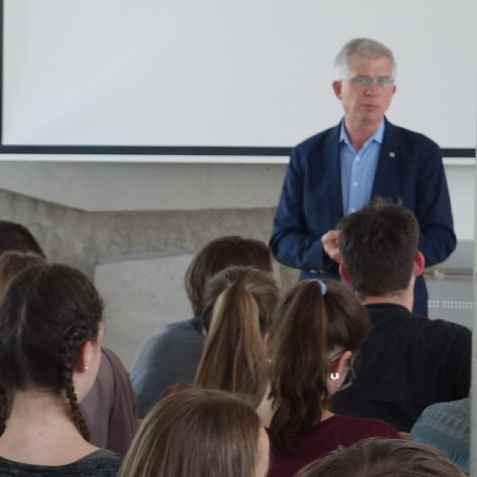
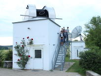

Vortrag von Andrew Ullmann
Andrew Ullmann (MdB) trägt zur Zukunftsfähigkeit der Demokratie vor
Biedermann und die Brandstifter
Max Frischs Drama aus dem Jahr 1957 ist die Parabel vom "Biedermann", die die unheilvolle Fähigkeit des Menschen zeigt, eine erkennbar drohende Gefahr auszublenden und so dem Untergang mit offenen Augen entgegenzugehen.

Hans-Haffner-Sternwarte
Herzlich Willkommen
Subline über mehrere Zeilen sodass man die Seite kurz einleiten kann
Fließtext. Eingebettet in das F-K-G ist die Entfaltung der Persönlichkeit der Schülerinnen und Schüler, die wir in ihrer Individualität bewusst unterstützen und fördern wollen. Es ist unser Ziel, unsere Schülerinnen und Schüler zur verantwortungsvollen Teilnahme am politischen, wirtschaftlichen und gesellschaftlichen Leben zu befähigen.